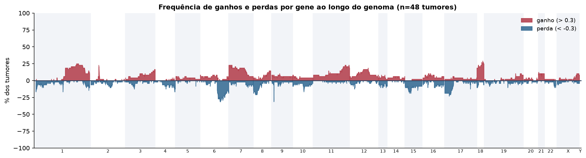
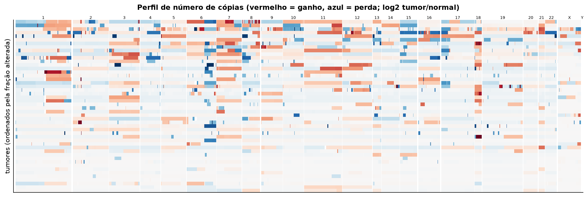
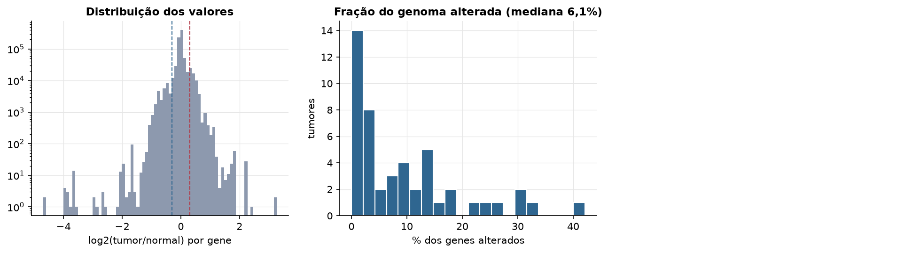
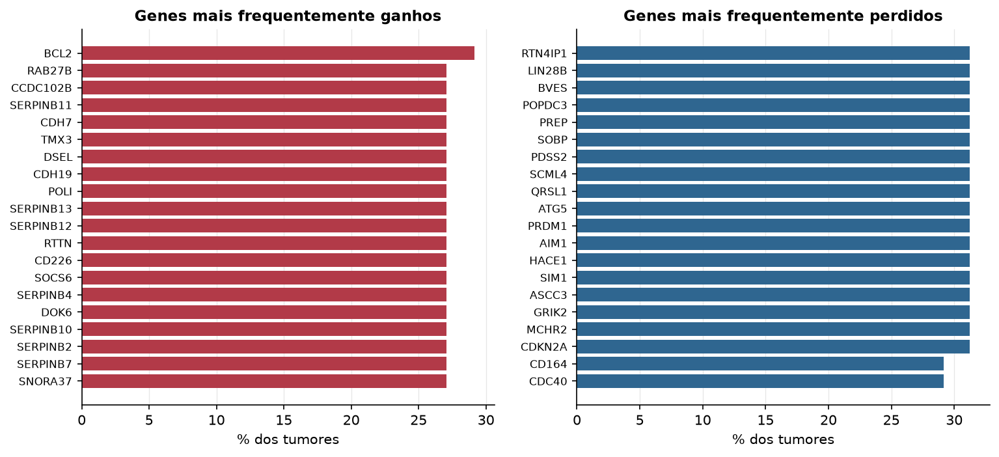

DLBC · Número de cópias (CNV)
Affymetrix SNP6, segmentos whitelisted do PanCanAtlas · gerado em 21/10/2026 20:54
48tumores
17.738genes
6,1%fração alterada mediana
116segmentos/tumor (mediana)
Fonte: SNP6 whitelisted (PanCanAtlas); nível de gene calculado dos segmentos (hg19)
O valor por gene é o do segmento que cobre o meio do gene (log2 tumor/normal, hg19). Sem correção de pureza e ploidia: tumores com pouca célula tumoral têm valores atenuados. Para chamadas discretas (−2 a 2), use o GISTIC2 do PanCanAtlas ou o ABSOLUTE.
Principais resultados
- Mediana de 6,1% dos genes com ganho ou perda por tumor (limiares log2 de 0.3 e -0.3).
- O cromossomo com mais ganhos em média é o 18 (21,5% dos tumores por gene) e o com mais perdas é o 15 (10,3%).
- Genes mais ganhos: BCL2 (29%), RAB27B (27%), CCDC102B (27%), SERPINB11 (27%), CDH7 (27%), TMX3 (27%). Genes mais perdidos: RTN4IP1 (31%), LIN28B (31%), BVES (31%), POPDC3 (31%), PREP (31%), SOBP (31%).
Paisagem ao longo do genoma


Carga de alterações

Genes recorrentes

Top 25 genes por frequência de ganho
| gene | chrom | % ganho | % perda | média log2 |
|---|---|---|---|---|
| BCL2 | 18 | 29.2 | 2.1 | 0.166 |
| RAB27B | 18 | 27.1 | 2.1 | 0.167 |
| CCDC102B | 18 | 27.1 | 2.1 | 0.144 |
| SERPINB11 | 18 | 27.1 | 2.1 | 0.147 |
| CDH7 | 18 | 27.1 | 2.1 | 0.154 |
| TMX3 | 18 | 27.1 | 2.1 | 0.149 |
| DSEL | 18 | 27.1 | 2.1 | 0.154 |
| CDH19 | 18 | 27.1 | 2.1 | 0.154 |
| POLI | 18 | 27.1 | 2.1 | 0.167 |
| SERPINB13 | 18 | 27.1 | 2.1 | 0.147 |
| SERPINB12 | 18 | 27.1 | 2.1 | 0.147 |
| RTTN | 18 | 27.1 | 2.1 | 0.149 |
| CD226 | 18 | 27.1 | 2.1 | 0.149 |
| SOCS6 | 18 | 27.1 | 2.1 | 0.149 |
| SERPINB4 | 18 | 27.1 | 2.1 | 0.147 |
| DOK6 | 18 | 27.1 | 2.1 | 0.149 |
| SERPINB10 | 18 | 27.1 | 2.1 | 0.146 |
| SERPINB2 | 18 | 27.1 | 2.1 | 0.147 |
| SERPINB7 | 18 | 27.1 | 2.1 | 0.147 |
| SNORA37 | 18 | 27.1 | 2.1 | 0.167 |
| SERPINB8 | 18 | 27.1 | 2.1 | 0.146 |
| HMSD | 18 | 27.1 | 2.1 | 0.146 |
| STARD6 | 18 | 27.1 | 2.1 | 0.167 |
| MBD2 | 18 | 27.1 | 2.1 | 0.167 |
| KDSR | 18 | 27.1 | 2.1 | 0.156 |
Top 25 genes por frequência de perda
| gene | chrom | % ganho | % perda | média log2 |
|---|---|---|---|---|
| RTN4IP1 | 6 | 0 | 31.2 | -0.225 |
| LIN28B | 6 | 0 | 31.2 | -0.225 |
| BVES | 6 | 0 | 31.2 | -0.225 |
| POPDC3 | 6 | 0 | 31.2 | -0.225 |
| PREP | 6 | 0 | 31.2 | -0.225 |
| SOBP | 6 | 0 | 31.2 | -0.225 |
| PDSS2 | 6 | 0 | 31.2 | -0.225 |
| SCML4 | 6 | 0 | 31.2 | -0.225 |
| QRSL1 | 6 | 0 | 31.2 | -0.225 |
| ATG5 | 6 | 0 | 31.2 | -0.238 |
| PRDM1 | 6 | 0 | 31.2 | -0.238 |
| AIM1 | 6 | 0 | 31.2 | -0.225 |
| HACE1 | 6 | 0 | 31.2 | -0.225 |
| SIM1 | 6 | 0 | 31.2 | -0.225 |
| ASCC3 | 6 | 0 | 31.2 | -0.225 |
| GRIK2 | 6 | 0 | 31.2 | -0.225 |
| MCHR2 | 6 | 0 | 31.2 | -0.226 |
| CDKN2A | 9 | 4.2 | 31.2 | -0.389 |
| CD164 | 6 | 0 | 29.2 | -0.198 |
| CDC40 | 6 | 0 | 29.2 | -0.198 |
| SLC22A16 | 6 | 0 | 29.2 | -0.198 |
| GPR6 | 6 | 0 | 29.2 | -0.198 |
| DDO | 6 | 0 | 29.2 | -0.198 |
| FIG4 | 6 | 0 | 29.2 | -0.198 |
| WASF1 | 6 | 0 | 29.2 | -0.198 |